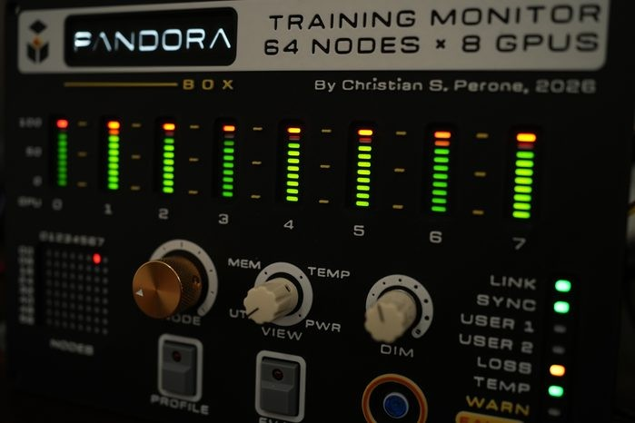

把需要留意的信息放在视线边缘
训练任务运行时，操作者可能正在写代码或查看结果，想确认机器是否仍有负载，却不想不断切回监控网页。Pandora M1提供一个实体状态面板：节点旋钮决定看哪台机器，另一个选择器决定看哪种指标，灯条呈现所选节点的GPU状态。这是作者10月26日展示的个人原型，不能按可购买整机理解。它适合说明一种具体交互：把持续留意的少量数值留在桌面，让屏幕继续承担日志和详细调查；是否减少了实际漏看故障，作者没有给对照结果。
Pandora M1 · 个人DIY／训练监控原型

训练任务运行时，操作者可能正在写代码或查看结果，想确认机器是否仍有负载，却不想不断切回监控网页。Pandora M1提供一个实体状态面板：节点旋钮决定看哪台机器，另一个选择器决定看哪种指标，灯条呈现所选节点的GPU状态。这是作者10月26日展示的个人原型，不能按可购买整机理解。它适合说明一种具体交互：把持续留意的少量数值留在桌面，让屏幕继续承担日志和详细调查；是否减少了实际漏看故障，作者没有给对照结果。
多机监控有两个维度：我要看哪台机器，以及我关心它的什么状态。实体旋钮把这两次选择拆开，操作者不用在长表格里重新找行。灯条也有取舍：它利于比较几块卡的相对高低，却不天然解释差异发生在什么时候、是否在等待数据或是哪条进程占用。面板因此更像一个调查入口。看到不平衡后，用户仍需要回到具体任务和时间序列；把利用率较低直接解释为故障，可能把正常同步等待误当成问题。公开材料没有证明面板会替用户作这样的诊断。
作者展示了节点灯阵及多个控制标记，并说明部分功能仍待完成。面板印着操作名称，不能证明它已经安全地连接到训练程序。若以后加入停止或评估，用户必须分得清当前选中的节点、将影响的任务以及操作是否生效；这和调暗灯光的后果完全不同。对于这种常驻桌面的装置，断线后继续显示上一次数值也容易被看成仍在更新。刷新时刻、失联提示和执行回执都是接入产品时要补上的信息，不是本次原型已经验证的能力。
这一原型对个人开发者的启发不是再造一套完整监控平台，而是挑出一个真正需要持续注意的信号，并给它固定位置和简单操作。比如多人共用训练资源时，面板应先帮助看出需要检查的节点，随后仍让已有工具负责日志、权限和恢复。灯光能否在工作环境中被注意、是否误报、转动选择后会不会读错节点，都需要实际使用才能回答。公开资料尚未确认现成套件、完整复现包或售价；文章署名许可也不能自动证明所有将来的硬件文件拥有同样许可。读者目前能评估的是交互原型，而非采购成熟度。遥测协议与固件细节亦未确认。